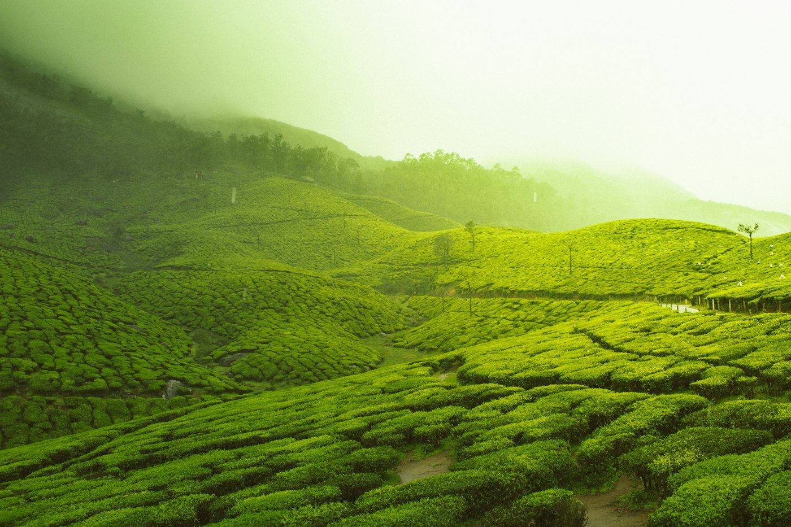

From blueprints to blends
The short version of a long love affair with tea.
Founder of The Tea Republic, one of Malaysia's pioneering specialist tea brands. I trained in architecture, fell for one unforgettable cup, and have been designing with tea ever since.
Everything I make starts with one question: how should this tea feel when someone finally holds it?
I source at trade fairs and import from across the tea world. Every blend is tasted by me first, then by a small circle of trusted tasters, before it ever reaches a tin.

The short version of a long love affair with tea.
Every good cup starts on a hillside.
Tea doesn't have to be pure leaf to be serious. A few cups that say a lot about how I think.
For corporate gifting, custom-blend collaborations, brand partnerships, talks on building a specialist F&B brand, or simply a good conversation over a pot of tea.